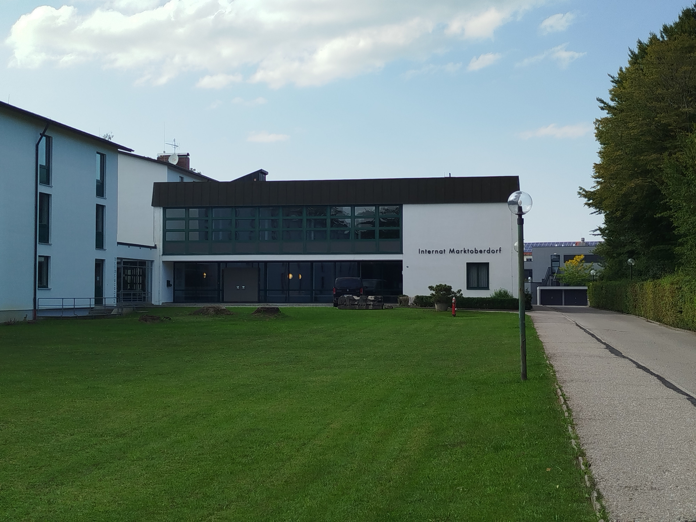
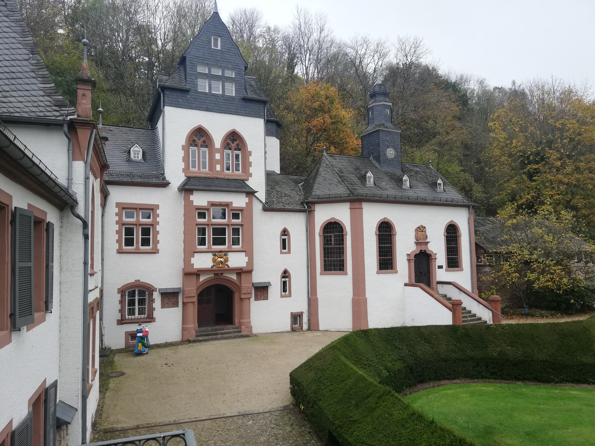

A Unified Method to Efficiently Verify Opacity of Discrete-Timed Automata
Building on our definition of threshold estimators and the concurrent composition by Zhang and Giua, we define the
timed concurrent composition (TCC) as a verification structure to verify several timed opacity notions on
discrete-timed automata.
This is thus another continuation on prevoius works on the verification of opacity in discrete-timed automata.
Moreover, this was my first international collaboration with Kuize Zhang.
Abstract
Opacity is a powerful confidentiality property which guarantees that secret information of a system cannot be
inferred from its observable behavior. To account for timing attacks, opacity has been extended to continuous-time
systems, but the verification problem was proven to be generally undecidable. As a result, multiple recent works
study the opacity verification problem of discrete-timed automata. The advantage of a discrete time setting is that
it can discretize any timed automaton as a discrete-state system, where opacity can be verified. However, such
verification methods usually rely on separating time steps into distinct hybrid states. This results in state
explosion and limited scalability for real-world problems.
In this paper, we present a new, more efficient verification method for opacity in a discrete time setting that
avoids the state explosion problem. Our verification method groups multiple time steps to intervals, instead of
evaluating each time step individually. We define four timed opacity notions and show that our method is capable of
verifying all of them in a unified manner. We analyze the efficiency of our method on a case study of a wireless
sensor network and randomized systems.
We provide a software prototype as an artifact.
All presented results in the paper can be reproduced using our artifact.
The artifact was not evaluated as there was no artifact evaluation at ICFEM 2025.
I presented our paper A Unified Method to Efficiently Verify Opacity of Discrete-Timed Automata at
the 2025 26th International Conference on Formal Engineering Methods (ICFEM) on TODO in Hangzhou,
China.
Efficient State Estimation of Discrete-Timed Automata
A continuation of our work on the verification of current-state opacity (CSO) on discrete timed automata.
We develop a new verification structure, called threshold estimator (TE).
We show that CSO can be efficiently verified using TE on several case studies.
The paper was published in the proceedings of the 2024 25th International Conference on Formal Engineering Methods
(ICFEM).
Abstract
State estimation is a fundamental method in control theory that has applications in privacy, fault diagnosis, and
the verification of other state inference properties. State estimation methods for timed automata rely on
discretizing time into atomic steps. These discrete time steps are enumerated in separate states, significantly
limiting scalability for large, realistic systems. In this paper, we propose a more efficient state estimation
method for discrete-timed automata. The key idea of our approach is to avoid the enumeration of single time steps
when possible. We provide a formal definition of a new state estimator model and an efficient algorithmic approach
to derive it from discrete-timed automata. We validate our method on 11 realistic case studies and show a
significant decrease in computational costs.
We provide a software prototype and all case studies in our artifact.
All presented results in the paper can be reproduced using our artifact.
The artifact was not evaluated as there was no artifact evaluation at ICFEM 2024.
I presented our paper Efficient State Estimation of Discrete-Timed Automata at the 2024 25th
International Conference on Formal Engineering Methods (ICFEM) on December 4, 2024 in Hiroshima,
Japan.
We prove that opacity can be verified in discrete-timed automata.
To facilitate this, we provide a verification method for current-state opacity (CSO) using tick automata.
To make the method more efficient, we develop the local time abstraction, reducing the size of the tick automata.
Our paper is the first to report a decidability result on the verification problem of opacity in discrete timed
automata.
However, two concurrent works by
André et al.
and
An et al.
also prove this decidability later in 2024.
Our paper was published in the proceedings of the 2024 IEEE/ACM 12th International Conference on Formal Methods in
Software Engineering (FormaliSE).
Abstract
Opacity is a powerful confidentiality property that holds if a system cannot leak secret information through
observable behavior. In recent years, time has become an increasingly popular attack vector. The notion of opacity
has therefore been extended to timed automata (TA). However, the verification of opacity of TA has been proven to be
undecidable for the commonly used dense time model. To make the problem decidable, state of the art approaches
consider weaker notions of opacity or heavily restrict the class of considered TA, resulting in unrealistic threat
models.
In this paper, we address the problem of verifying opacity of TA without restrictions. For this purpose, we consider
a discrete time setting. We present a novel algorithm to transform TA to equivalent finite automata (FA) and then
use known methods to verify opacity of the resulting FA. To improve the efficiency of our algorithm, we use a novel
time abstraction that significantly reduces the state space of the resulting FA, improving the scalability of our
approach. We validate our method using randomized systems, as well as four case studies from the literature showing
that our approach is applicable in practice.
We provide a software prototype and all case studies in our artifact.
All presented results in the paper can be reproduced using our artifact.
The artifact was given the available and functional badge by the artifact evaluation committee of FormaliSE 2024.
I presented our paper Verifying Opacity of Discrete-Timed Automata at the 2024 IEEE/ACM 12th
International Conference on Formal Methods in Software Engineering (FormaliSE) on April 14, 2024 in
Lisbon, Portugal.
A Systematic Study on the Potentials and Limitations of LLM-assisted Software Development
I co-authored this paper on LLM-assisted software development.
It was joint work with my colleagues and two students who wrote their theses on the topic.
Abstract
In the field of software engineering, Large Language Models like GPT have gained enormous interest in recent times.
With its expanding area of application, ChatGPT has become an essential tool for code generation. Several studies
have shown that the quality of generated code depends on the underlying dataset and the quality of the provided
prompts. However, its precise capabilities and limitations remain uncertain, as does the extent of assistance
required for effective code generation. We present the results of our systematic study in which we investigate the
potential of ChatGPT, based on GPT-4, in solving assignments of an introductory-level programming class. We examine
the impact of programming language choice, different prompting strategies, and the results of the model compared to
those of real students. Our results show that ChatGPT cannot solve the assignments independently, but outperforms
the average student with human assistance.
I participated in the
Marktoberdorf Summer School
2025.
It was one of the 'theoretical editions' of the summer school with the topic specification and verification for secure cyberspace.
The summer school was organized by Jasmin Blanchette and Laura Kovács.

The Internat of the Marktoberdorf Gymnasium.
Marktoberdorf Summer School
Freiberg, Germany
October 2025
I participated in the NFDIxCS summer school 2025.
This was the first edition of the summer school and it was focused on open science and reproducible research.
We learned a lot about research artifacts and software licensing.
We also visited the mine 'Reiche Zeche' and tasted the delicious local whiskey!
The entrance to the mine Reiche Zeche in Freiberg, Germany.
Workshop at Schloss Dagstuhl
Dagstuhl, Germany
October 2024
I participated in the
research methods in software engineering training
2024 at Schloss Dagstuhl.
The training consisted of several invited lectures on different topics, related to research methods on software
engineering.
We discussed the topics of the lectures (and many related topics) in breakout groups.

View from a window of Schloss Dagstuhl.
Visit at University of Cagliari
Cagliari, Italy
September 2024
I started my first international collaboration with
Kuize Zhang
in 2024.
At the time, he was working at the university of Cagliari as part of the
Automatic Control
group.
I visited the group to meet in person and accelerate the progress on our collaborative work.
I also gave a presentation about my research at the Autolab seminar of the Automatic Control group.
I completed my B.Sc. and M.Sc. degrees in computer science at TU Berlin.
Throughout my studies, I found topics in theoretical computer science and especially regarding formal
verification most interesting.
In both my theses, I worked on formal verification methods of confidentiality properties of timed systems.
In particular, as part of my master thesis, I first proved the opacity verification problem for discrete-timed
automata to be decidable - a result that has been independently re-established multiple times since.
I continue the topic of verification and enforcement of opacity of discrete-timed automata in my research as a
PhD student.
My goal with my PhD is to develop scalable methods to guarantee timed opacity that can be used on actual
real-world applications (see publications for more information).
PhD Student (since August 2023)
Topic: Formal Verification and Enforcement of Confidentiality Properties in Time-Sensitive
Systems.
Supervisor: Prof. Dr. Sabine Glesner
Master of Science (2023)
Thesis: Verifying and Enforcing Opacity of Timed Automata
Examiners: Prof. Dr. Sabine Glesner, Prof. Dr. Stephan Kreutzer
Bachelor of Science (2020)
Thesis: Improving Confidentiality Enforcement through Symbolic Information Flow Analysis
Examiners: Prof. Dr. Sabine Glesner, Prof. Dr. Florian Tschorsch
Teaching Experience
Besides my studies I worked over four years as a tutor, teaching classes of up to 50 students at a time.
This work involved also involved consultation hours and design and grading of homeworks and exams.
With the start of my PhD, I also became a teaching assistant with the same teaching tasks and many additional
responsibilities.
These responsibilities mainly involve the organization and examination of classes.
Besides that, I also supervise theses.
Teaching assistant (since August 2023)
Tutor (2019-2023)
Responsibilities
Online and offline tutorials
Consultation hours
Exercise design for homeworks and exams
Class organization
Grading
Lectures
Taught classes
Software Engineering and Programming Paradigms (Lecture)
Software Engineering of Embedded/Cyber-Physical Systems (Lecture)
Digital Systems (Lecture)
Cyber-Physical Systems (Project)
Software and Embedded Systems Engineering (Seminar)